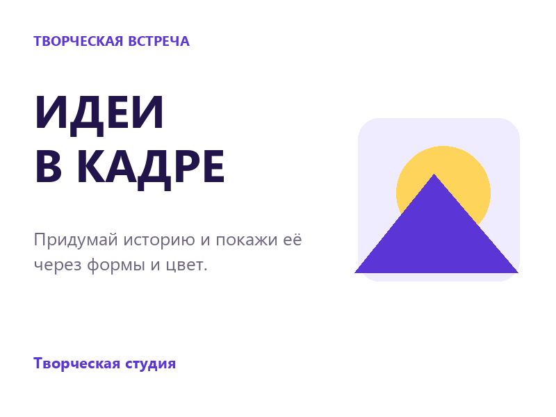
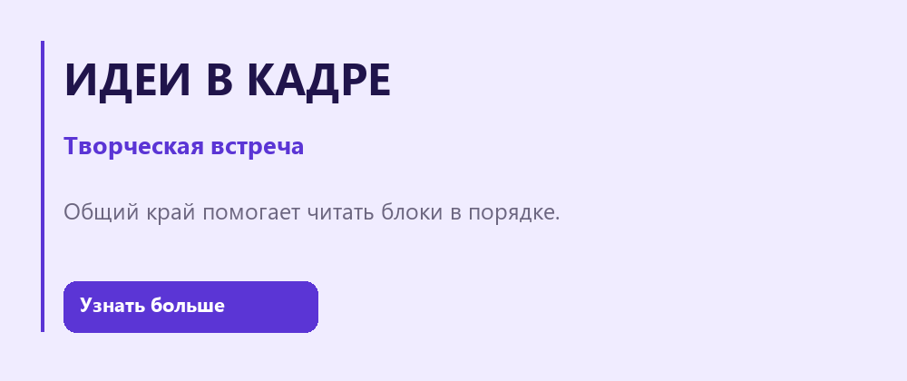
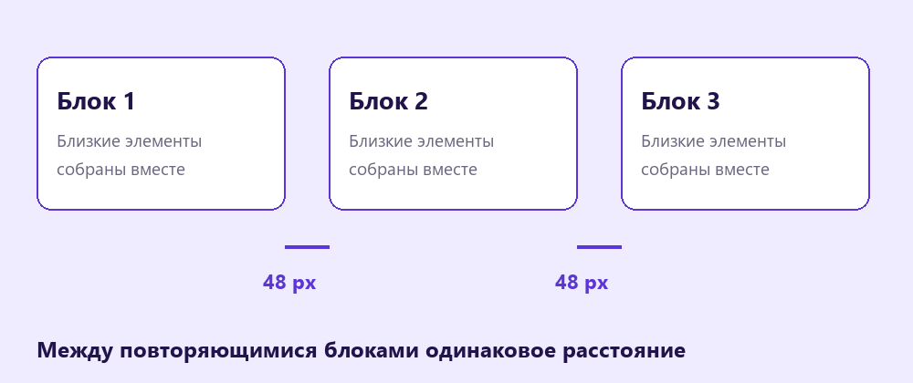

Композиция, выравнивание и отступы
Собери карточку творческой встречи и проверь, как выравнивание, интервалы и главный акцент меняют её восприятие.
Перейти к заданию ↗
Перед новой практикой
Три небольших вопроса по предыдущему уроку. Выбери ответ и нажми «Проверить».
Клавиши для практики
Сочетания для Windows. Переключи клавиатуру на английскую раскладку. Перед командой заверши ввод текста.
Сначала главное
Композиция - расположение элементов в работе. Выбери, что зритель должен заметить первым: название или иллюстрацию. Размер, цвет и свободное место помогают выделить главный элемент. Если все элементы одинаково громкие, внимание рассеивается.

В карточке один главный акцент, а остальные элементы его поддерживают.
Попробуй в Figma
Общий край
Для общей линии выдели несколько объектов и найди кнопки выравнивания в верхней части правой панели Design. Align left (выровнять слева) совмещает левые края объектов. Для работы внутри фрейма заранее поставь один блок на нужное расстояние от края и выровняй остальные по нему.

Левые края заголовка, описания и кнопки лежат на одной линии.
Попробуй в Figma
Идеи в кадре
Соберём идеи и превратим их в аккуратную творческую работу. У текста есть понятные роли и свободное место.
Нажми на варианты и сравни.
Повторяемые интервалы
Выдели три блока и найди Distribute vertical spacing (распределить вертикальные интервалы). Крайние блоки задают границы, средний получает равные промежутки. Отступы между связанными элементами делай меньше, чем между отдельными смысловыми блоками.

Равные интервалы помогают увидеть порядок; близость показывает связь элементов.
Попробуй в Figma
Карточка «Идеи в кадре»
Создай карточку встречи «Идеи в кадре»: короткий заголовок, описание и подпись «Творческая студия». Добавь одну иллюстрацию из знакомых фигур. Добейся ясного порядка чтения.
В Figma нажми на название файла и выбери Duplicate to drafts (создать копию в черновиках). Работай в собственной копии. Инструкции и образцы заблокированы.
Проверь свою работу
Отмечай пункты после проверки в Figma.
Если закончил раньше
Сделай копию и выстрой композицию вокруг иллюстрации. Сохрани те же тексты и сравни две версии.